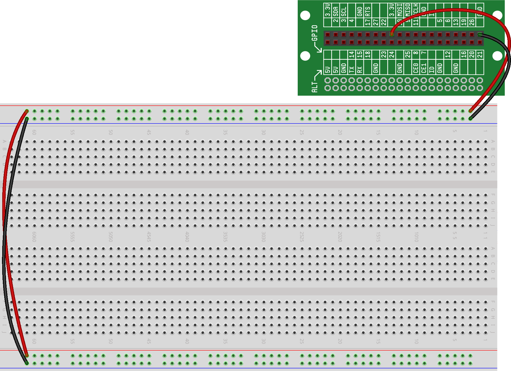
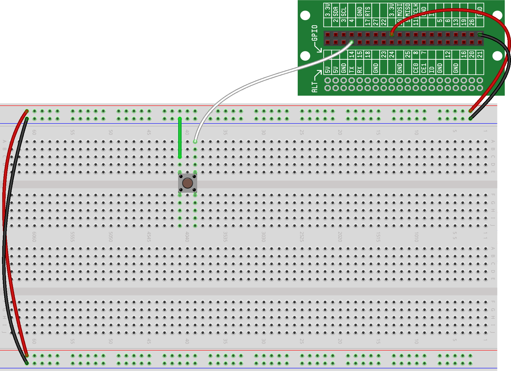
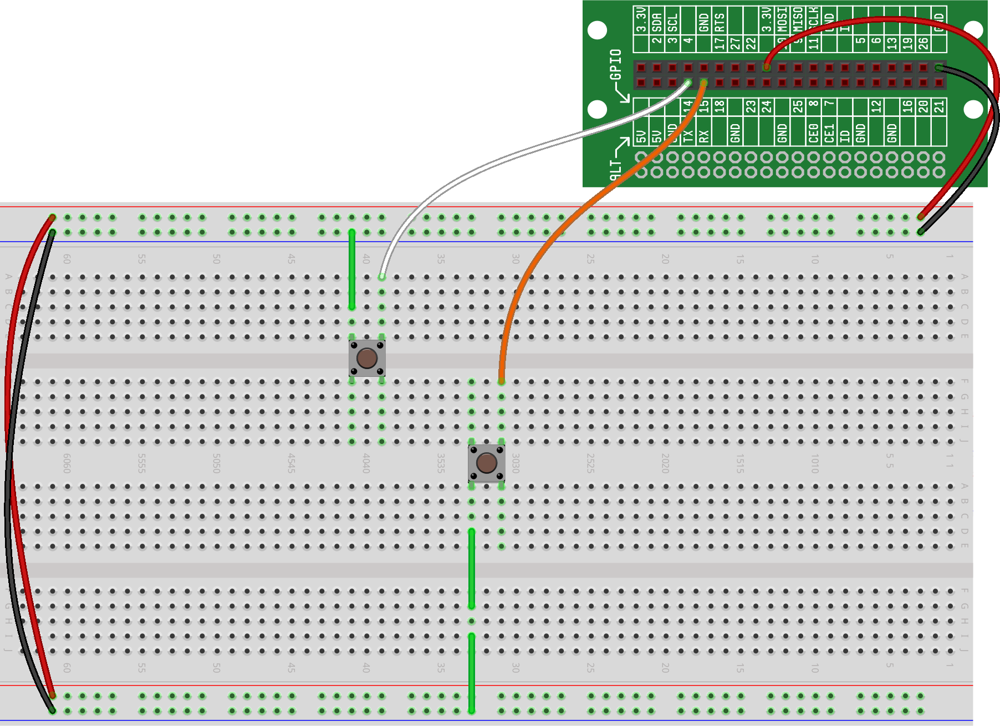
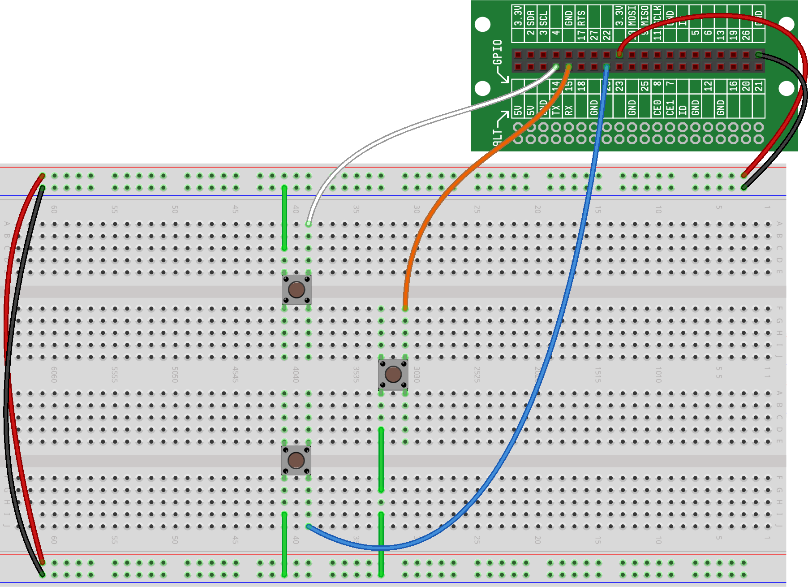
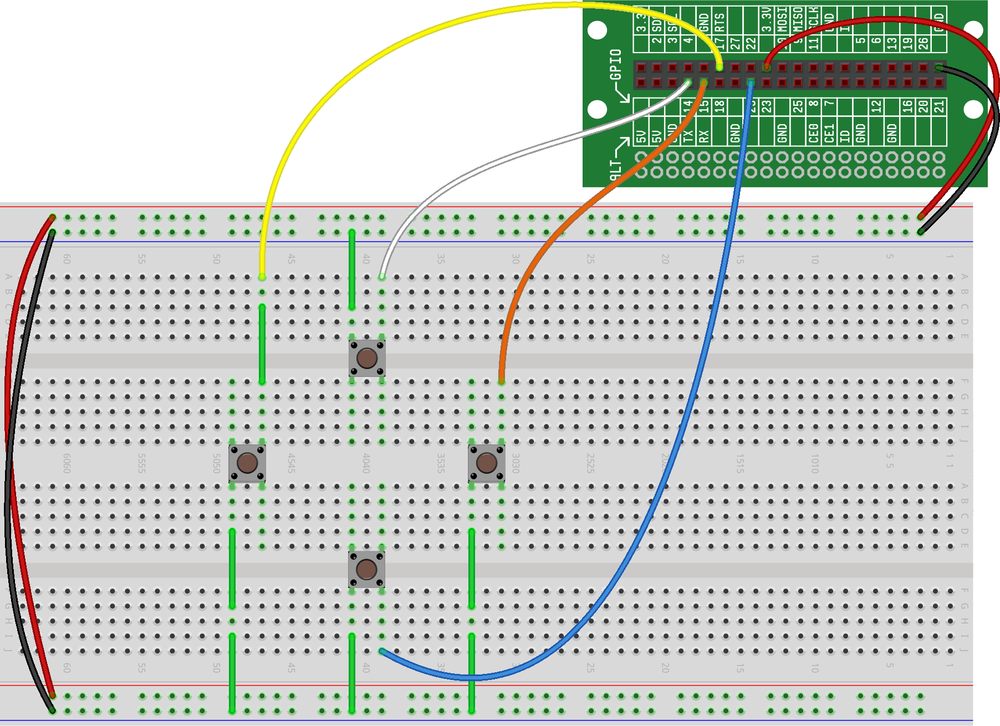

We've come a long way in the past several projects, and we're now ready to build and program a working pattern-matching game (similar to the electronic Simon game). The game will require four different colored buttons (wired as GPIO Inputs) and four LEDs (wired as GPIO Outputs). We'll also need four resistors -- one for each LED we'll be wiring. We will essentially be replicating the circuit designs that we learned in previous projects, but on a larger scale. And we'll be writing some longer and more complex code to handle all the game conditions.
Because the fully-built circuit will use up a lot of breadboard space and require a lot of wires, we highly recommend starting this project with an empty breadboard, and implementing the circuit in a way that's similar to the diagrams we provide. Also, you'll notice that we wire the buttons, LEDs and other components in a specific pattern (a square or diamond shape) -- this will help make our game more playable when it's complete.
In this project, we'll wire up the four buttons and write some code to verify they are working. In the next project, we'll wire up the four LEDs and write some code to verify they are working. At that point, the circuit is complete, and we'll spend several additional projects building the code to make the game fully operating. Take your time, follow along, and pretty soon, you'll playing an electronic game that YOU built and programmed!
For this project, we're going to recommend that you clear your breadboard. While half the breadboard should be sufficient space, starting with a clean board can help avoid confusion in your wiring. We also suggest trying to build this project on just the left-hand side of breadboard -- by doing this, you should be able to put some upcoming projects on the other side of the breadboard, which is nice so that you won't have to tear down this project to make room for the other.
Hardware Step #1: Provide Power to Both Power Rails
Because this circuit is going to be a bit larger than our previous circuits, and because we're going to want to organize our components in a way that we can actually use them later, we're going to make both power rails (the red and blue strips on either side of the board) available. As we've done previously, we make one set of power rails functional by running wires from one of the 3.3V pins and one of the GND pins on the connector board to the red and blue rails.
To get power and ground to the other set of rails, we then run wires from one red rail to the other and from one blue rail to the other.
Here is what your breadboard should look like:

Hardware Step #2: Wire Your First Button Using a GPIO Input
Now that we have power and ground on both sides of the board, we can start wiring our components. We'll ultimately want four buttons and four LEDs arranged in a diamond pattern, so we start by wiring the first button towards the top of the breadboard. If you recall from Using Buttons With GPIO, to wire a button to a GPIO, the circuit schematic should look as follows:
To implement that circuit on the breadboard, we wire one side of the button to ground and wire the other side of the button to a GPIO. We're going to choose GPIO14 for our implementation; you're welcome to use a different GPIO, but if you do, keep in mind that you'll have to modify the code we provide to match your GPIO selection.
Here is what your breadboard should look like:

Hardware Step #3: Wire Your Second Button Using a GPIO Input
We can now wire the second button similarly to the first. Again, remember that we're looking to build a diamond pattern, so this button should be positioned appropriately. For our circuit, we're going to attach the second button to GPIO15.
Here is what your breadboard should look like:

You'll notice that we used two small jumper wires to attache the second button to ground. You could certainly use one longer wire to attach the button, but we've found that by using the small wires, you won't have the larger wires getting in the way while you're trying to use the buttons to play your game. Not to mention, the whole circuit will look cleaner by using the small jumpers as much as possible.
Hardware Step #4: Wire Your Third Button Using a GPIO Input
We can now wire the third button just like the first two. For this button, we've chosen to use GPIO22.
Here is what your breadboard should look like:

Hardware Step #5: Wire Your Fourth Button Using a GPIO Input
It's time to wire our fourth and final button in our circuit. For this last button, we've chosen to use GPIO17.
Here is what your breadboard should look like with all the buttons wired:

Good job! You should now have four buttons wired on your breadboard. Before we wire up any more components, let's write some code to test that the buttons are wired correctly and are operating as we expect...
Our test code is going to have two sections -- the first will import the functions we're going to need for the rest of the code and the second will test each of the buttons.
Code Section #1: Import Needed Functions
The first part of our code is going to import the one library and function we'll need later in our code. For this test code, the only function we'll need is the Button() function from the rstem.button library.
Here's what the import code should look like:
Code Section #2: Test Buttons
To test a button, we'll initialize it just like we did in Using Buttons With GPIO, and we can then check for the button being pressed and display a message to the Output Window when it is being pressed.
Here's what the LED test code should look like for one of the buttons:
If you replicate that code for each of the buttons and put the whole thing in a while loop, you will now have the ability to test each of the buttons in your circuit. This code will be useful later if, after adding more components to your circuit, you find that the code isn't working properly. Using this code will allow you to test the buttons independently of the other components.
Here is what your full set of code should look like at this point:
If you run this code, you should see the status of each button being updated in the Output Window.